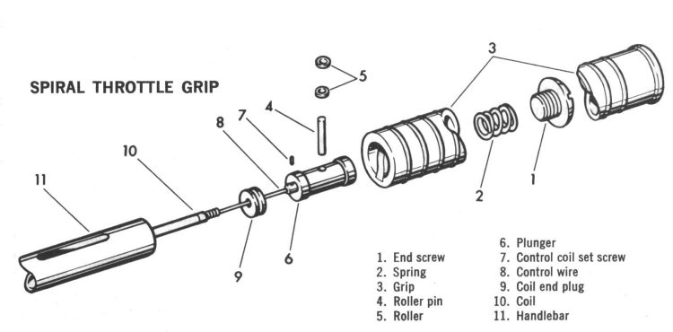
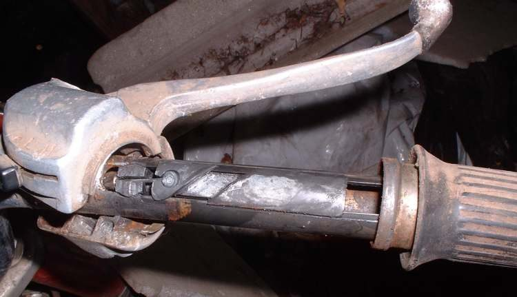
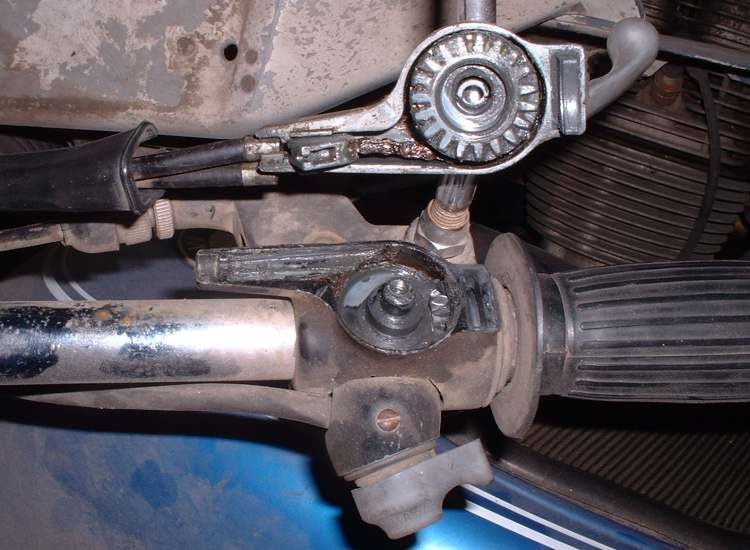
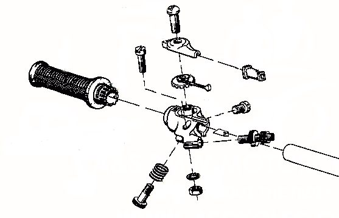
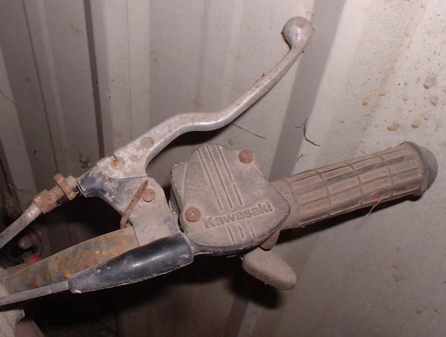
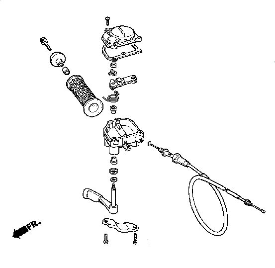

All throttles do the same job: they pull a cable that opens the carburettor slide or the throttle body. Most throttle cables break at the grip end, where the cable bends each time the grip turns. Makers use several designs to pull the cable. Knowing which one is on your bike tells you how it comes apart and which lubricant it needs.
Common designs
| Type | How it pulls the cable | Lubricant |
|---|---|---|
| Drum or pulley | Cable end sits in a curved channel on the grip tube; the cable enters in a gentle curve | Light oil or dry graphite |
| Straight pull | Cable is pulled in a straight line, with no bend at the grip | Light oil or dry graphite |
| Twin cable (pull and return) | One cable opens, one closes | Light oil or dry graphite |
| Spiral groove slider | A spiral groove in the grip moves a block along a slot in the bar | Grease |
| Gear driven | Small gears turn a cable pulley at an angle | Grease |
| Thumb throttle (ATVs, some scooters) | A lever under the thumb pulls the cable | Light oil on the pivot |
Safety
- Do not ride with a throttle that does not snap shut.
- On a fuel-injected bike, switch the ignition off before unplugging any switch connector.
Steps
- Slacken the cable adjuster and screw it in so the cable has plenty of slack.
- Remove the screws that hold the twist grip housing (or the thumb throttle housing) on the bar. If switches are in the housing, support it so the wires are not pulled.
- Unhook the cable end, or both ends on a twin cable grip. Note which cable goes where.
- Slide the grip off. On a spiral type, lift out the slider block. On a gear type, note the gear positions before removing them.
- Clean the bar, the grip tube, the housing and any gears or blocks. Remove old grease, dirt and burrs.
- Check the cable end for broken strands and the grip tube for cracks or wear. Replace parts that are worn.
- Lubricate: light oil or dry graphite on cable ends and drums; grease on spiral grooves, slider blocks and gears.
- Refit the grip, the cable ends and the housing. The housing must not pinch the grip tube. Leave a small gap between the grip and the bar end.
- Set free play (Adjust throttle free play).
Check your work
- The grip or lever snaps shut from full open with the bars straight and at each lock.
- The idle does not rise when the bars are turned.
- All switches in the housing work.
If it did not fix the problem
- Grip free but the throttle still slow: Lubricate or replace the throttle cable.
- Throttle closes but the idle stays high: Idle speed is too high.